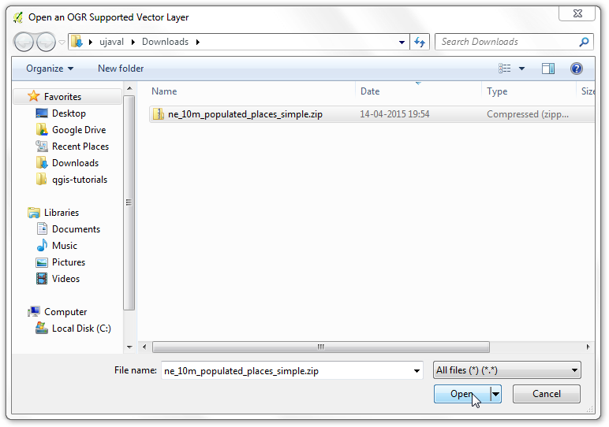
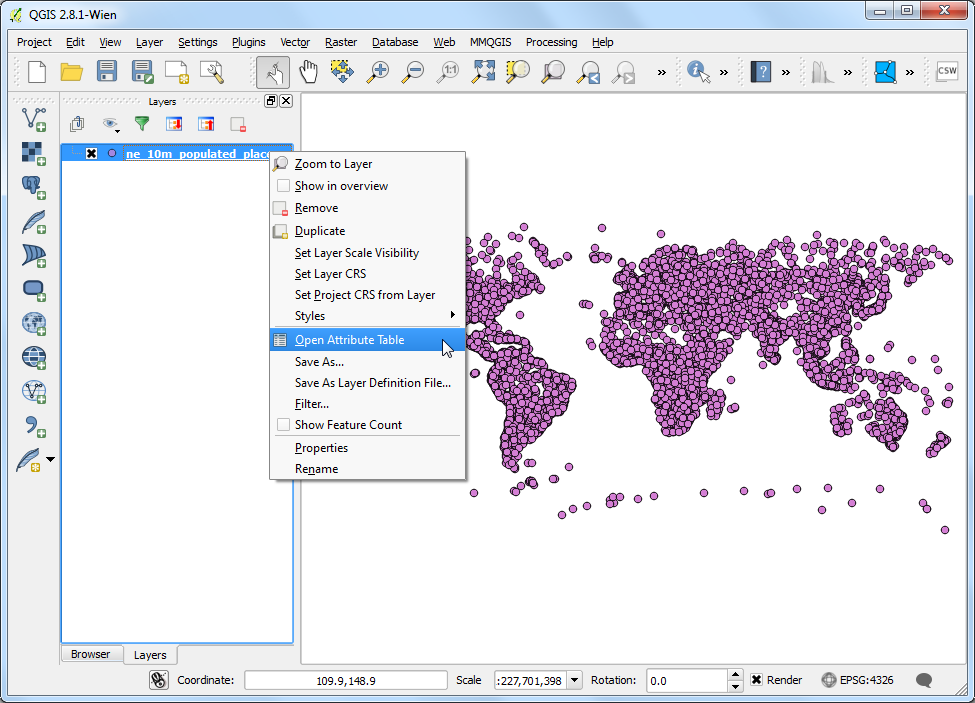
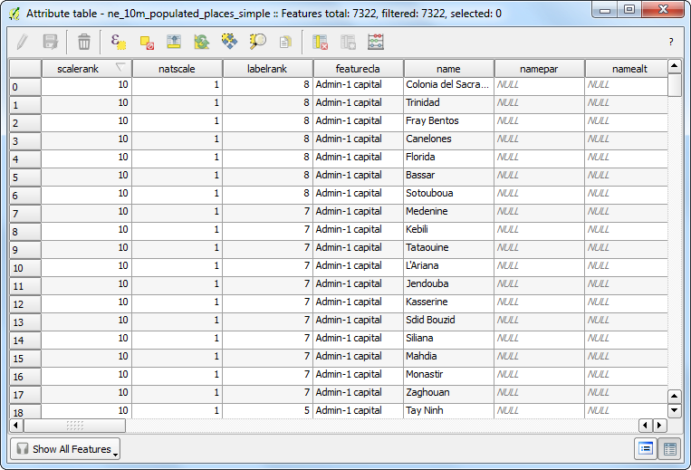

屬性的操作
[ Download PDF
A4
Letter ]
GIS 資料可解構成兩個層級──圖徵（Features）及屬性（Attributes），而屬性就是圖徵的結構化資料。本教學將示範如何瀏覽這些屬性，以及在 QGIS 中對屬性執行基本的查詢操作。
內容說明
這次教學使用的資料是所有世界上有人住的地方。我們要從這當中找出所有人口大於 1,000,000 的國家首都。
你還會學到這些
使用表達式選取圖層中的圖徵
使用 屬性 工具列取消選取圖徵
使用 查詢建構器 來顯示圖層中的次群組
操作流程
載好資料以後，打開 QGIS，選擇 。

點選 瀏覽 然後移到你下載資料的地方。

找到 ne_10m_populated_places_simple.zip 這個檔案後，直接選 開啟舊檔 即可。這個檔案不需要解壓縮，QGIS 自己有能力可以讀取 zip 檔的內容。

這下子 QGIS 就會顯示檔案的內容，你會看到許多點，每個點都是世界上有人居住的地方。

在這個圖層上按右鍵，選擇 開啟屬性表格，

然後就可以看到許多的屬性，每個屬性都有各自的數值。

我們要找的是每個圖徵（每個點）的人口數，相對應的屬性就是 pop_max。點兩次這個標題就可以把這個欄位以遞減排序顯示。

接下來就來試試屬性的查詢功能。QGIS 可以運用類似 SQL 的表達式進行查詢，首先要選擇 使用表示式選取圖徵。

在跳出的「使用表示式選取圖徵」視窗中，展開 欄位與值`的內容，點兩下 ``pop_max` 標籤，這樣它就會被加進表示式的視窗當中。如果你不是很確定這個屬性會有什麼值，可以選擇 載入值：全部唯一值 以查看資料庫中這個屬性具有的所有可能的值。本教學中，我們要尋找所有人口大於 1,000,000 的圖徵點，所以在完成如圖所示的表達式後，就可以按下 選取。

按下 關閉 後回到 QGIS 主視窗，你應該就會看到有一些點已經變成黃色了。這些點就是在這資料庫中，所有 pop_max 屬性值大於 1,000,000 的點的集合。

我們還有一個目標，那就是找出這些點裡面有哪些是國家首都。相關的資訊記在 adm0cap 欄位中，1 代表這點是國家首都。因此，我們只要使用 and 運算子添加另外一個條件到剛才的表達式中就行了。立馬來試試：在屬性表格中選擇 使用表示式選取圖徵 按鈕，輸入以下的表達式後，按下 選取 然後 關閉。
"pop_max" > 1000000 and "adm0cap" = 1

回到 QGIS 主視窗，這下子被選取的點就變少了。這些點就是「人口大於 1,000,000 的國家首都」的查詢結果。我們可以把這個選擇存起來，以利後續的分析。在圖層 ne_10m_populated_places_simple 上按右鍵，然後選擇 屬性。

在「一般」分頁中，找到 Feature subset （或 Provider feature filter）的欄位，選擇 查詢建構器。

輸入之前的表達式，然後按下 確定。
"pop_max" > 1000000 and "adm0cap" = 1

回到 QGIS 主視窗，這時你會發現其他的點都消失不見了。現在你就可以只針對這些點，進行其他的分析。你應該也會發現這些點目前都還是黃的，這是因為他們目前還處在被選取的狀態下。在「屬性」工具列上，有個「取消所有圖層的圖徵選取」鈕，只要點選它...

你就會看到所有的點都被取消選取，並且回復原來的顏色了。